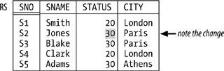

|
|
< Day Day Up > |
|
Functional Dependencies and Boyce/Codd Normal FormIt's well known that the notions of second normal form (2NF), third normal form (3NF), and Boyce/Codd normal form (BCNF) all depend on the notion of functional dependency. Here's a precise definition:
The FD A By way of example, suppose there's an integrity constraint to the effect that if two suppliers are in the same city, then they must have the same status (see Figure 7-2, where I've changed the status for supplier S2 from 10 to 30 in order to conform to this hypothetical new constraint). Then the FD:
{ CITY } is satisfied by this revised form—let's call it RS—of the suppliers relvar S. Note the braces, by the way; I use braces to stress the point that both sides of the FD are sets of attributes, even when (as in the example) the sets in question involve just a single attribute. Figure 7-2. Revised suppliers relvar RS—sample valueAs the example indicates, the fact that some relvar R satisfies a given FD constitutes a database constraint in the sense of the previous chapter; more precisely, it constitutes a (single-relvar) constraint on that relvar R. For instance, the FD in the example is equivalent to the following Tutorial D constraint:
CONSTRAINT RSC COUNT ( RS { CITY } ) =
COUNT ( RS { CITY, STATUS } ) ;
By the way, here's a useful thing to remember: if relvar R satisfies the FD A At this point I need to introduce a couple of terms. The first is superkey. Basically, a superkey is a superset of a key (not necessarily a proper superset, of course); equivalently (with reference to the formal definition of key from Chapter 4), a subset SK of the heading of relvar R is a superkey for R if and only if it possesses the uniqueness property but not necessarily the irreducibility property. Thus, every key is a superkey, but most superkeys aren't keys; for example, {SNO,CITY} is a superkey for relvar S but not a key. Observe in particular that the heading of relvar R is always a superkey for R. NOTE Important: If SK is a superkey for R and A is any subset of the heading of R, R necessarily satisfies the FD SK The other new term is trivial FD. Basically, an FD is trivial if there's no way it can possibly be violated. For example, the following FDs are all trivially satisfied by any relvar that includes attributes called SNO, STATUS, and CITY:
{ CITY, STATUS } In the first case, for instance, if two tuples have the same value for CITY and STATUS, they certainly have the same value for CITY. In fact, an FD is trivial if and only if the left side is a superset of the right side (again, not necessarily a proper superset). Of course, we don't usually think about trivial FDs when we're doing database design, because they're, well, trivial; but when we're trying to be formal and precise about these matters, we need to take all FDs into account, trivial ones as well as nontrivial. Having pinned down the notion of FD precisely, I can now say that Boyce/Codd normal form (BCNF) is the normal form with respect to FDs—and, of course, I can also define it precisely:
In other words, in a BCNF relvar, the only FDs are either trivial ones (we can't get rid of those, obviously) or "arrows out of superkeys" (we can't get rid of those, either). Or as some people like to say: Every fact is a fact about the key, the whole key, and nothing but the key— though I must immediately add that this informal characterization, intuitively pleasing though it is, isn't really accurate, because it assumes among other things that there's just one key. I need to elaborate slightly on the previous paragraph. When I talk about "getting rid of" some FD, I fear I'm being a little sloppy once again. For example, the revised suppliers relvar RS of Figure 7-2 satisfies the FD {SNO}
Finally, as I assume you know, the normalization discipline says that if relvar R is not in BCNF, it should be decomposed into smaller ones that are (where "smaller" means, basically, having fewer attributes). For example:
Nonloss DecompositionWe know that if some relvar isn't in BCNF, it should be decomposed into smaller ones that are. Of course, it's important that the decomposition be nonloss (also called lossless): we must be able to get back to where we came from—the decomposition mustn't lose any information. Consider relvar RS once again (see Figure 7-2), with its FD {CITY} Figure 7-3. Relvars SNS and CS—sample valuesWhat exactly is it that makes some decompositions nonloss and others lossy? Well, note that the decomposition process is, formally, a process of taking projections; all of the "smaller" relvars in all of our examples so far have been projections of the original relvar. In other words, the decomposition operator is, precisely, the projection operator of relational algebra. NOTE I'm being sloppy again. Like all of the algebraic operators, projection really applies to relations, not relvars. But we often say things like relvar CS is a projection of relvar RS when what we really mean is the relation that's the value of relvar CS at any given time is a projection of the relation that's the value of relvar RS at that time.I hope that's clear! Onward. When we say a certain decomposition is nonloss, what we really mean is that if we join the projections together again, we get back to the original relvar. Observe in particular that, with reference to Figure 7-3, relvar RS is not equal to the join of its projections SNS and CS, and that's why the decomposition is lossy. With reference to Figure 7-2, by contrast, it is equal to the join of its projections SNC and CS; that decomposition is indeed nonloss. To say it again, then, the decomposition operator is projection and the recomposition operator is join. And the formal question that lies at the heart of normalization theory is this:
An important, though partial, answer to this question was provided by Ian Heath in 1971 when he proved the following theorem:
By way of example, consider relvar RS once again (Figure 7-2). That relvar satisfies the FD {CITY} NOTE In case you're wondering why I said Heath's theorem provides only a partial answer to the original question, let me explain in terms of the foregoing example. Basically, the theorem does tell us that the decomposition of Figure 7-2 is nonloss; however, it doesn't tell us that the decomposition of Figure 7-3 is lossy. That is, it gives a sufficient condition, but not a necessary one, for a decomposition to be nonloss. (A stronger form of Heath's theorem, giving both necessary and sufficient conditions, was proved by Ron Fagin in 1977, but the details are beyond the scope of the present discussion. See Exercise 7-18 at the end of the chapter.) As an aside, I remark that in the paper in which he proved his theorem, Heath also gave a definition of what he called "third" normal form that was in fact a definition of BCNF. Since that definition predated Boyce and Codd's own definition by some three years, it seems to me that BCNF ought by rights to be called Heath normal form. But it isn't. One last point: it follows from the discussions of this subsection that the constraint I showed earlier for relvar RS:
CONSTRAINT RSC COUNT ( RS { CITY } ) =
COUNT ( RS { CITY, STATUS } ) ;
could alternatively be expressed thus:
CONSTRAINT RSC
RS = JOIN { RS { SNO, SNAME, CITY }, RS { CITY, STATUS } } ;
("At all times, relvar RS is equal to the join of its projections on {SNO,SNAME,CITY} and {CITY,STATUS}"; I'm using the prefix version of JOIN here.) But Isn't It All Just Common Sense?I noted earlier that normalization theory has been criticized on the grounds that it's all basically just common sense. Consider relvar STP again, for example (see Figure 7-1). That relvar is obviously badly designed; the redundancies are obvious, the consequences are obvious too, and any competent human designer would "naturally" decompose that relvar into its projections SP and SS as previously discussed, even if that designer had no knowledge of BCNF whatsoever. But what does "naturally" mean here? What principles is the designer applying in opting for that "natural" design? The answer is: they're exactly the principles of normalization. That is, competent designers already have those principles in their brain, as it were, even if they've never studied them formally and can't put a name to them. So yes, the principles are common sense—but they're formalized common sense. (Common sense might be common, but it's not so easy to say exactly what it is!) What normalization theory does is state in a precise way what certain aspects of common sense consist of. In my opinion, that's the real achievement of normalization theory: it formalizes certain commonsense principles, thereby opening the door to the possibility of mechanizing those principles (that is, incorporating them into mechanical design tools). Critics of normalization usually miss this point; they claim, quite rightly, that the ideas are really just common sense, but they typically don't realize that it's a significant achievement to state what common sense means in a precise and formal way. 1NF, 2NF, 3NFNormal forms below BCNF are mostly of historical interest; as noted in the introductory section, in fact, I don't even want to bother to give the definitions here. I'll just remind you that all relvars are at least in 1NF,[*] even ones with relation-valued attributes (RVAs). From a design point of view, however, relvars with RVAs are usually—though not invariably—contraindicated. Of course, this doesn't mean you should never have RVAs (in particular, there's no problem with query results that include RVAs); it just means we don't usually want RVAs "designed into the database," as it were (and we can always eliminate them, thanks to the availability of the UNGROUP operator of relational algebra). I don't want to get into a lot of detail on this issue here; let me just say that relvars with RVAs look very like the hierarchies found in older, nonrelational systems like IMS, and all of the old problems that used to arise with hierarchies therefore raise their head again. Here for purposes of reference is a brief list of some of those problems:
To repeat, however, RVAs can occasionally be OK, even in base relvars. See Exercise 7-14 at the end of the chapter. |
|
|
< Day Day Up > |
|